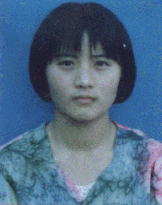

坚守人生的理想，让生命拥有风采
尊敬的各位领导，老师，同学们：
我是教科院96级学生李伟言，很高兴能在这里讲述自己成长的历程，我乐于同大家分享我的一些感受与体会。
我于1978年出生于吉林双辽的一个小乡村，在家乡同龄人的眼里，我是令人羡慕的，我是他们之中唯一走进大学校门的孩子。在成长的过程中，我深深地体味到人不能没有理想，人只有不断地耕耘，然后才有踏实的收获，在这过程中，品味甘甜，也品尝苦涩。
记得在我六岁的那年，有一天，我曾经很认真地对母亲说：“妈妈，我不会白来这世上的，我会做大事给您看。”现在想来，这只不
我是教科院96级学生李伟言，很高兴能在这里讲述自己成长的历程，我乐于同大家分享我的一些感受与体会。
我于1978年出生于吉林双辽的一个小乡村，在家乡同龄人的眼里，我是令人羡慕的，我是他们之中唯一走进大学校门的孩子。在成长的过程中，我深深地体味到人不能没有理想，人只有不断地耕耘，然后才有踏实的收获，在这过程中，品味甘甜，也品尝苦涩。
记得在我六岁的那年，有一天，我曾经很认真地对母亲说：“妈妈，我不会白来这世上的，我会做大事给您看。”现在想来，这只不
过是一个幼稚的孩子说的一句充满童真的话语，但也许就在那时，我心中就已悄悄播下了梦想的种子。童年的生活是清苦的，但大自然的浸润和陶冶却总使我感受到一种纯真的快乐。很小的时候，我就开始迷上了书，背唐诗宋词、看神话故事、读小说，随书中人物的命运而悲欢忧喜，幻想着自己是他们之中的一个，也有一个跌宕起伏、多姿多彩的人生。是书让我发现了一个神奇而美妙的世界，尽管那时我没什么具体的理想，但妙不可言的梦想却一直没断过。
上了高中之后，我开始读懂父母期盼的目光，我开始努力了，一心想考上一所好的大学。由于住校条件的不好，加上体质原本就弱，从高二开始，我患上了严重的神经衰弱，饱受精神上的折磨与痛苦，一天能真正学习的时间就是晚自习的三、四个小时。早晨起来，当温暖的阳光洒满教室，同学们都说说笑笑涌向教室去上自习的时候，我是那样的难过、烦闷，不止一次地一个人坐在床边偷偷地哭。我曾经在书中摘抄过这样一段话：“当生活的危机到来的时候，人不仅应该收敛起岁月留下的天真，还有内心深处的抑郁与迷惘，我们得满怀信心地走上前去。”当时我还太小，无法深刻理解这其中包涵的真谛，但这段话却一直在潜意识里支配着我，我想我必须在战胜困难方面表现出我的意志。我经常用书中优秀人物的事迹告诉自己不要轻言放弃，《真心英雄》里的一段歌词成了我的座右铭，写在我每一本教科书、每一个笔记本的扉页上：“把握生命里的每一分钟、全力以赴我们心中的梦，不经历风雨，怎么见彩虹，没有人能随随便便成功。”与神经衰弱做斗争的一个办法，就是调整学习方法，让我在能学习的三四个小时里，总保持高效率，就这样，我的学习成绩仍总是年级前三名。高中三年加深了我对理想、成功与痛苦的理解，有欢笑也有眼泪，想起来，让我倍感亲切。它给我最深的体会就是实现理想的道路决不是坦途。
大学的环境相对于高中是轻松的，可以选择继续奋斗也可以选择舒适安逸，如果不求有大的发展，也能顺利地拿到毕业证、学位证。很多高中同学来信劝我：好好轻松轻松吧。但我又一次选择了前者。我这样提醒自己：“人追求希冀与理想要付出许多努力甚至是一生的代价，但人要颓废和庸常却易于反掌。”这时受师大学术氛围的影响与教师们育人精神的感召，真正属于我的理想逐渐在头脑中清晰了，那就是做一名出色的人民教师，因为与其他职业相比，教育的独特性就在于它直面人的生命，它照亮人的心魄，塑造人的灵魂，它是民族的希望和根本。教书育人，探索教育教学理论，这是我的生命目标，是我的终生事业，我相信这个理想值得我用全力以赴去追求。无论在学业上，还是在品德能力上，我都要求自己要不断地进步。
大二一年，我一次性地通过了计算机二级、外语四、六级。在这一年中，专业课很多，院里的活动也很多，还要准备期末考试，一年以来我没有看过一场电影、录相，周六、周日也很少出去玩儿，但是我并未觉得遗憾。尽管我也喜爱看电影，也是看完一次还想看第二次，但是生活是不能全凭兴趣的支配，确定了一种选择就意味着放弃无数种选择。
也是从大二开始，我对科研产生了兴趣，我们院很重视良好学术氛围的培育，连续两年举行学生论文比赛，我都积极地参加了，获得了一、二等奖。其中《知识经济与教育的变革》在去年的《现代中小学教育》第1 2 期发表。写这篇文章的过程是很艰苦的，构思的过程中有时候思路阻塞了，很想放弃，但最终还是坚持下来。我鼓励自己：不在乎能否写好，也不在乎能否获奖，坚持本身就是胜利。事实证明，我当时的想法是正确的。写论文对我来讲只是一种尝试，但这种尝试却使我常受益匪浅，不仅使我把课内外所学的知识融汇贯通，更重要的是科研活动培养了我一种思考的兴趣。开学以来，除了毕业论文，我又写出了两篇，能否发表并不重要，关键对我来说是一种积累。为了扩大知识面、拓宽专业基础，我广泛地阅读教育类书籍《爱弥儿》、《教育漫话》、《大教学论》……学术报告也每场必听，所有这些均为我以后的学习打下了良好的基础。
也许是兴趣加努力的因素，我的专业成绩也很高，基本都是优，我连续两次获得一等人民奖学金，还获得首届“吉盛伟邦奖学金”。在去年第六届专业十佳评选中，我很荣幸地获得最高分，连续两年分别被评为校优秀学生、优秀团员，并于去年11月份被推荐为免试硕士研究生。这对于我来说，不仅是一种回报，更是一种鼓舞。
当然这一切并非是一帆风顺的。三年多来，对我最大的威胁还是来自身体，虽然没有什么器质性的疾病，但由于体质不好经常感冒。对于别人来说感冒无非是咳嗽、发烧，而我却往往是病毒型的，呕吐、虚脱。最重的要属1998年11月份的那次了。当时我整整病了七天，在友谊医院打点滴的两小时，多次晕过去，那痛苦的感觉我总难以忘记。当我睁开双眼看到的是同学关切的目光和紧张的表情，友情与阳光是令人温暖和振奋的。我想我仍要一如既往地坚强。可是心有余而力不足。我试着坐起来，却没有一丝力气。打完药后从医院到寝室短短的几百米，我都无法走回去。多亏寝室的同学帮我打车，扶着我走进车里。冬天还好一些，在夏天，因为感冒总要出很多虚汗，薄薄的衣服总是给打湿，坐在医院的长条椅子上，我不敢靠在上面，那样会使衣服上沾上椅子上的红油漆。屋漏偏逢连夜雨，神经衰弱又重新找上了我。尤其是大三上学期，晚上室友们早已进入甜美的梦乡，而我用尽办法却难以成眠。睡一宿好觉，这在别人来说是再自然不过的事情，对于我却成了一种奢望。早晨有时候当寝室的同学掀开窗帘说：“今天的天儿真好”时，我心里真是难过极了。因为我知道，难熬的一天又开始了。我又什么也学不上了，只是徒然坐在教室里而已。有时在教室里实在撑不住，就只好回寝室呆着，但是我不敢躺下，因为那样更会使我的头脑浑浑噩噩地一片，只能斜倚在被子上，耳边轻放着给我以力量的音乐。不知是我太脆弱，还是因音乐的旋律引发我的共鸣，眼泪总是不由自主地流下来。我真的羡慕别人，羡慕他们总能那么轻易地就进入梦乡。神经衰弱，人如果不是亲自经历，很难理解它带给人的痛苦。假期没事时，我对自己的求学生涯做了个回顾，足足写了20几页。我父亲看后，禁不住落泪了，他说没有想到女儿在学业上受了这么多苦。我也曾经抱怨为什么上帝在给我健全人格、美好心灵的同时，却不给我一个强健的体魄呢？但现在我明白：生活还是公平的，它给予我的痛苦又何尝不是一笔宝贵的财富，它在一方面亏待了我，却又在其它方面给我以补偿，是痛苦加深了我对生命与生活的理解，使我仍以乐观态度投入追求之中。在这一年中，我坚持读了很多书，做了大量的读书笔记，还发表了数篇论文，年终的成绩也列年级第一。大四开学初，在新民实习期间，我又不慎患上了感冒，神经衰弱也没有彻底好，又面临讲课的任务，当时心里真的很着急。我奔波于医院与学校之间，还必须坚持备课，每堂课都靠吃药撑着，尽管这样，我的课讲得仍很好。下课了，学生们把我围住，问这儿问那儿，对我说：“李老师，你讲课我们最愿意听。”还有什么比这句话更让人欣慰的呢？体质弱，但这不能成为我甘于现状不思进取的理由。我很少向别人提及我由于体质不好遭受的很多痛苦，包括我的家人，因为许多体验让我难以平静，更何况我珍藏这些痛苦的经历，就像我珍重收获与欢乐一样。
在这四年中，由于体质的不好，我十分珍视能学习的时间。精力充沛的时候， 我经常是在学习、读书。我的生活在别人眼里似乎是单调的，不像别的一些女孩子活得那样滋润：大把的时间在电影院里轻松度过，还可以打扑克，光顾美容院……尽管流行的时尚离我很远，但我的爱好却使我拥有着一个丰富而又宁静的精神世界，这爱好便是文学与音乐，我能有一点收获，我人生观、价值观的形成与这二者是绝然不可分的。我几乎读遍了现当代所有名家的散文，那对人生的感悟，对意义的寻求，我说不清给予了我怎样的影响。我很认真地思考过生命与时间这些命题。生命表面上看是无数个时间单位的堆积，每一个人都要经历出生、成长、衰老的过程，然后便是化于尘土、归于尘土了。就像一位作家所说的那样：“在牵牛花初开的时节，葬礼的号角就已吹响。”虽有消极之嫌，却道出了一个永远不变的事实。让过程精彩，这是我们对待人生有限性的唯一办法，尽管这过程一定会有痛苦，但除了认真地去经历这过程，我想我真的别无选择。是文学引导着我对人生进行着思考与体悟，它让我分清在这个世界上，对于生命来说，什么是重要的，什么是次要的，什么是无谓的；告诉我喧嚣的背后是空虚，宁静当中才会有充实；告诉我对于生命中的大忧伤要拿出勇气，对于小忧伤则要拿出耐力；让我懂得人生的帐本上没有支出，无论是欢乐还是痛苦都有它别致的色彩；告诉我人生是生命显示尊严、力量与价值的过程，人生需要生命过程中的奋斗与光彩，而我，必须把主要的精力献给最有价值的选择。如此，纵然我的体质也许仍会使我不断地遭遇苦痛，我又有什么可害怕的呢？纵然有好心的同学朋友劝慰我要换个活法——轻松轻松，我又怎能再动摇呢？听音乐，也是我生活中不可少的一部分，有人说，人在快乐的时候，他只是在用耳朵来听音乐，而在悲伤失意的时候，音乐才能走进他心里。是的，每当我一次又一次地因晚上睡眠不好第二天心情极度抑郁时，我经常拿起录音机，听里边唱：“年轻的泪水不会白流，痛苦和骄傲这一生都要拥有。”当我走在实现理想的道路上，偶尔感到孤独寂寞的时候，听里边唱：“眼前的繁华我从不羡慕，因为最美的在心不在远处……”音乐，那或委婉或激昂的旋律、那饱含真谛与意义的歌词，总能给我以力量、以警醒、以希望……有人说过，一个人在这喧闹的世界里活着而不感到内心空虚、无助，一定会有一些超越性的东西支撑他的灵魂。如果真是这样的话，对于我来说，这超越性的东西就是文学、是音乐。我从中得到的生命体验总在强化我的信念，这信念就是：摆脱牵绊，战胜逆境，为自己真实的理想而生活。这信念真的能使我走出选择的困惑。本来在去年暑期，家人已经在北京为我找好了工作单位——中建二局。面对很高的待遇与5000元的月薪，我当时很犹豫，毕竟我身体不是很好，走读研的道路仍要付出很多的努力；而去北京——泱泱国都，一切有家人为我安排，不怕今后的幸福生活没有保证。但最终我还是放弃了，因为我觉得：教书育人，教学科研，终日与书籍为伴，这样的生活方式更适合我，在这里我更能找到自我，更能体味到生命中真正属于我的幸福与快乐，理想贵在坚持，坚定的理想会赋予人永不衰竭的动力。大家都熟悉张雨生的《我的未来不是梦》：“你是不是像我在太阳下低头，流着汗水默默辛苦地工作？你是不是像我就算受了冷落，也不放弃自己想要的生活？”我每次听到这里，心里总有一种共鸣与震撼，是的，我想在实现理想的过程中现在会有、将来也一定会有许多的挫折与痛苦，但我绝不会陷入虚无与迷茫，因为理想与信念给了我抵御诱惑、走出困境的坚强与勇气。
最后，我想以下面的话语结束我今天的报告，并愿以此与同学们共勉：人应该拥有理想与信念，人希望活得积极，走得踏实，因为这是生命最重要的课题，因为这是“深耕一寸田，收获一季冬”的最好印证，因为这样的信仰带来内心的祥和，因为生活要用真心付出，因为这是生命的终极关怀。
上了高中之后，我开始读懂父母期盼的目光，我开始努力了，一心想考上一所好的大学。由于住校条件的不好，加上体质原本就弱，从高二开始，我患上了严重的神经衰弱，饱受精神上的折磨与痛苦，一天能真正学习的时间就是晚自习的三、四个小时。早晨起来，当温暖的阳光洒满教室，同学们都说说笑笑涌向教室去上自习的时候，我是那样的难过、烦闷，不止一次地一个人坐在床边偷偷地哭。我曾经在书中摘抄过这样一段话：“当生活的危机到来的时候，人不仅应该收敛起岁月留下的天真，还有内心深处的抑郁与迷惘，我们得满怀信心地走上前去。”当时我还太小，无法深刻理解这其中包涵的真谛，但这段话却一直在潜意识里支配着我，我想我必须在战胜困难方面表现出我的意志。我经常用书中优秀人物的事迹告诉自己不要轻言放弃，《真心英雄》里的一段歌词成了我的座右铭，写在我每一本教科书、每一个笔记本的扉页上：“把握生命里的每一分钟、全力以赴我们心中的梦，不经历风雨，怎么见彩虹，没有人能随随便便成功。”与神经衰弱做斗争的一个办法，就是调整学习方法，让我在能学习的三四个小时里，总保持高效率，就这样，我的学习成绩仍总是年级前三名。高中三年加深了我对理想、成功与痛苦的理解，有欢笑也有眼泪，想起来，让我倍感亲切。它给我最深的体会就是实现理想的道路决不是坦途。
大学的环境相对于高中是轻松的，可以选择继续奋斗也可以选择舒适安逸，如果不求有大的发展，也能顺利地拿到毕业证、学位证。很多高中同学来信劝我：好好轻松轻松吧。但我又一次选择了前者。我这样提醒自己：“人追求希冀与理想要付出许多努力甚至是一生的代价，但人要颓废和庸常却易于反掌。”这时受师大学术氛围的影响与教师们育人精神的感召，真正属于我的理想逐渐在头脑中清晰了，那就是做一名出色的人民教师，因为与其他职业相比，教育的独特性就在于它直面人的生命，它照亮人的心魄，塑造人的灵魂，它是民族的希望和根本。教书育人，探索教育教学理论，这是我的生命目标，是我的终生事业，我相信这个理想值得我用全力以赴去追求。无论在学业上，还是在品德能力上，我都要求自己要不断地进步。
大二一年，我一次性地通过了计算机二级、外语四、六级。在这一年中，专业课很多，院里的活动也很多，还要准备期末考试，一年以来我没有看过一场电影、录相，周六、周日也很少出去玩儿，但是我并未觉得遗憾。尽管我也喜爱看电影，也是看完一次还想看第二次，但是生活是不能全凭兴趣的支配，确定了一种选择就意味着放弃无数种选择。
也是从大二开始，我对科研产生了兴趣，我们院很重视良好学术氛围的培育，连续两年举行学生论文比赛，我都积极地参加了，获得了一、二等奖。其中《知识经济与教育的变革》在去年的《现代中小学教育》第1 2 期发表。写这篇文章的过程是很艰苦的，构思的过程中有时候思路阻塞了，很想放弃，但最终还是坚持下来。我鼓励自己：不在乎能否写好，也不在乎能否获奖，坚持本身就是胜利。事实证明，我当时的想法是正确的。写论文对我来讲只是一种尝试，但这种尝试却使我常受益匪浅，不仅使我把课内外所学的知识融汇贯通，更重要的是科研活动培养了我一种思考的兴趣。开学以来，除了毕业论文，我又写出了两篇，能否发表并不重要，关键对我来说是一种积累。为了扩大知识面、拓宽专业基础，我广泛地阅读教育类书籍《爱弥儿》、《教育漫话》、《大教学论》……学术报告也每场必听，所有这些均为我以后的学习打下了良好的基础。
也许是兴趣加努力的因素，我的专业成绩也很高，基本都是优，我连续两次获得一等人民奖学金，还获得首届“吉盛伟邦奖学金”。在去年第六届专业十佳评选中，我很荣幸地获得最高分，连续两年分别被评为校优秀学生、优秀团员，并于去年11月份被推荐为免试硕士研究生。这对于我来说，不仅是一种回报，更是一种鼓舞。
当然这一切并非是一帆风顺的。三年多来，对我最大的威胁还是来自身体，虽然没有什么器质性的疾病，但由于体质不好经常感冒。对于别人来说感冒无非是咳嗽、发烧，而我却往往是病毒型的，呕吐、虚脱。最重的要属1998年11月份的那次了。当时我整整病了七天，在友谊医院打点滴的两小时，多次晕过去，那痛苦的感觉我总难以忘记。当我睁开双眼看到的是同学关切的目光和紧张的表情，友情与阳光是令人温暖和振奋的。我想我仍要一如既往地坚强。可是心有余而力不足。我试着坐起来，却没有一丝力气。打完药后从医院到寝室短短的几百米，我都无法走回去。多亏寝室的同学帮我打车，扶着我走进车里。冬天还好一些，在夏天，因为感冒总要出很多虚汗，薄薄的衣服总是给打湿，坐在医院的长条椅子上，我不敢靠在上面，那样会使衣服上沾上椅子上的红油漆。屋漏偏逢连夜雨，神经衰弱又重新找上了我。尤其是大三上学期，晚上室友们早已进入甜美的梦乡，而我用尽办法却难以成眠。睡一宿好觉，这在别人来说是再自然不过的事情，对于我却成了一种奢望。早晨有时候当寝室的同学掀开窗帘说：“今天的天儿真好”时，我心里真是难过极了。因为我知道，难熬的一天又开始了。我又什么也学不上了，只是徒然坐在教室里而已。有时在教室里实在撑不住，就只好回寝室呆着，但是我不敢躺下，因为那样更会使我的头脑浑浑噩噩地一片，只能斜倚在被子上，耳边轻放着给我以力量的音乐。不知是我太脆弱，还是因音乐的旋律引发我的共鸣，眼泪总是不由自主地流下来。我真的羡慕别人，羡慕他们总能那么轻易地就进入梦乡。神经衰弱，人如果不是亲自经历，很难理解它带给人的痛苦。假期没事时，我对自己的求学生涯做了个回顾，足足写了20几页。我父亲看后，禁不住落泪了，他说没有想到女儿在学业上受了这么多苦。我也曾经抱怨为什么上帝在给我健全人格、美好心灵的同时，却不给我一个强健的体魄呢？但现在我明白：生活还是公平的，它给予我的痛苦又何尝不是一笔宝贵的财富，它在一方面亏待了我，却又在其它方面给我以补偿，是痛苦加深了我对生命与生活的理解，使我仍以乐观态度投入追求之中。在这一年中，我坚持读了很多书，做了大量的读书笔记，还发表了数篇论文，年终的成绩也列年级第一。大四开学初，在新民实习期间，我又不慎患上了感冒，神经衰弱也没有彻底好，又面临讲课的任务，当时心里真的很着急。我奔波于医院与学校之间，还必须坚持备课，每堂课都靠吃药撑着，尽管这样，我的课讲得仍很好。下课了，学生们把我围住，问这儿问那儿，对我说：“李老师，你讲课我们最愿意听。”还有什么比这句话更让人欣慰的呢？体质弱，但这不能成为我甘于现状不思进取的理由。我很少向别人提及我由于体质不好遭受的很多痛苦，包括我的家人，因为许多体验让我难以平静，更何况我珍藏这些痛苦的经历，就像我珍重收获与欢乐一样。
在这四年中，由于体质的不好，我十分珍视能学习的时间。精力充沛的时候， 我经常是在学习、读书。我的生活在别人眼里似乎是单调的，不像别的一些女孩子活得那样滋润：大把的时间在电影院里轻松度过，还可以打扑克，光顾美容院……尽管流行的时尚离我很远，但我的爱好却使我拥有着一个丰富而又宁静的精神世界，这爱好便是文学与音乐，我能有一点收获，我人生观、价值观的形成与这二者是绝然不可分的。我几乎读遍了现当代所有名家的散文，那对人生的感悟，对意义的寻求，我说不清给予了我怎样的影响。我很认真地思考过生命与时间这些命题。生命表面上看是无数个时间单位的堆积，每一个人都要经历出生、成长、衰老的过程，然后便是化于尘土、归于尘土了。就像一位作家所说的那样：“在牵牛花初开的时节，葬礼的号角就已吹响。”虽有消极之嫌，却道出了一个永远不变的事实。让过程精彩，这是我们对待人生有限性的唯一办法，尽管这过程一定会有痛苦，但除了认真地去经历这过程，我想我真的别无选择。是文学引导着我对人生进行着思考与体悟，它让我分清在这个世界上，对于生命来说，什么是重要的，什么是次要的，什么是无谓的；告诉我喧嚣的背后是空虚，宁静当中才会有充实；告诉我对于生命中的大忧伤要拿出勇气，对于小忧伤则要拿出耐力；让我懂得人生的帐本上没有支出，无论是欢乐还是痛苦都有它别致的色彩；告诉我人生是生命显示尊严、力量与价值的过程，人生需要生命过程中的奋斗与光彩，而我，必须把主要的精力献给最有价值的选择。如此，纵然我的体质也许仍会使我不断地遭遇苦痛，我又有什么可害怕的呢？纵然有好心的同学朋友劝慰我要换个活法——轻松轻松，我又怎能再动摇呢？听音乐，也是我生活中不可少的一部分，有人说，人在快乐的时候，他只是在用耳朵来听音乐，而在悲伤失意的时候，音乐才能走进他心里。是的，每当我一次又一次地因晚上睡眠不好第二天心情极度抑郁时，我经常拿起录音机，听里边唱：“年轻的泪水不会白流，痛苦和骄傲这一生都要拥有。”当我走在实现理想的道路上，偶尔感到孤独寂寞的时候，听里边唱：“眼前的繁华我从不羡慕，因为最美的在心不在远处……”音乐，那或委婉或激昂的旋律、那饱含真谛与意义的歌词，总能给我以力量、以警醒、以希望……有人说过，一个人在这喧闹的世界里活着而不感到内心空虚、无助，一定会有一些超越性的东西支撑他的灵魂。如果真是这样的话，对于我来说，这超越性的东西就是文学、是音乐。我从中得到的生命体验总在强化我的信念，这信念就是：摆脱牵绊，战胜逆境，为自己真实的理想而生活。这信念真的能使我走出选择的困惑。本来在去年暑期，家人已经在北京为我找好了工作单位——中建二局。面对很高的待遇与5000元的月薪，我当时很犹豫，毕竟我身体不是很好，走读研的道路仍要付出很多的努力；而去北京——泱泱国都，一切有家人为我安排，不怕今后的幸福生活没有保证。但最终我还是放弃了，因为我觉得：教书育人，教学科研，终日与书籍为伴，这样的生活方式更适合我，在这里我更能找到自我，更能体味到生命中真正属于我的幸福与快乐，理想贵在坚持，坚定的理想会赋予人永不衰竭的动力。大家都熟悉张雨生的《我的未来不是梦》：“你是不是像我在太阳下低头，流着汗水默默辛苦地工作？你是不是像我就算受了冷落，也不放弃自己想要的生活？”我每次听到这里，心里总有一种共鸣与震撼，是的，我想在实现理想的过程中现在会有、将来也一定会有许多的挫折与痛苦，但我绝不会陷入虚无与迷茫，因为理想与信念给了我抵御诱惑、走出困境的坚强与勇气。
最后，我想以下面的话语结束我今天的报告，并愿以此与同学们共勉：人应该拥有理想与信念，人希望活得积极，走得踏实，因为这是生命最重要的课题，因为这是“深耕一寸田，收获一季冬”的最好印证，因为这样的信仰带来内心的祥和，因为生活要用真心付出，因为这是生命的终极关怀。